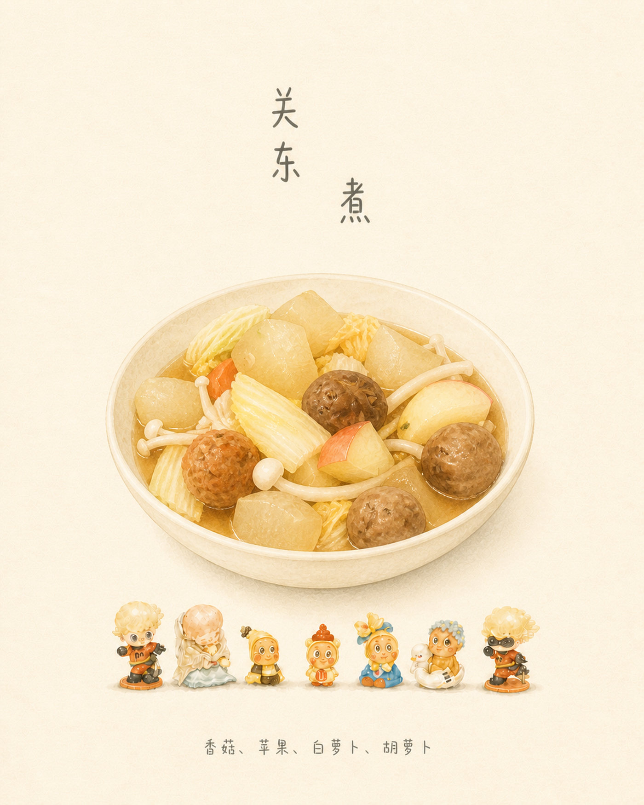

关东煮
香菇 · 苹果 · 白萝卜 · 胡萝卜
喜欢做饭，也想让点菜变得简单一点。
于是，我把自己的厨房做成了一个小产品。
勾选食材，从基础菜谱中找一道接近的菜。
此处展示 CookLikeHOC 菜谱库的 4 道节选，按核心食材匹配，不换算家庭份量。
选中食材后，点击“找一道菜”。
原应用里，上传实拍、填写菜名与材料后，菜品立即进入菜单。封面在后台按日式家庭菜单 Skill 生成，完成后替换实拍；即使生成失败，已经保存的菜和照片也不会丢失。
这是从本地应用整理的作品集演示：菜单使用已有实拍与生成封面，点菜和食材选择可体验，不上传图片、不调用生成服务，也不修改真实菜单或库存。